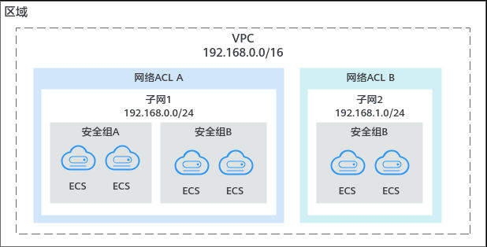
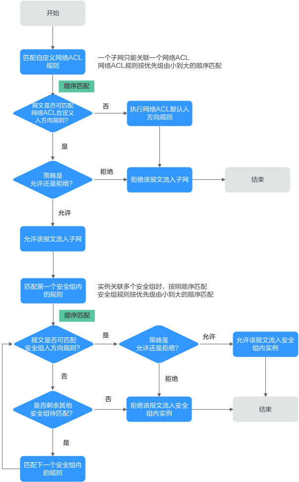
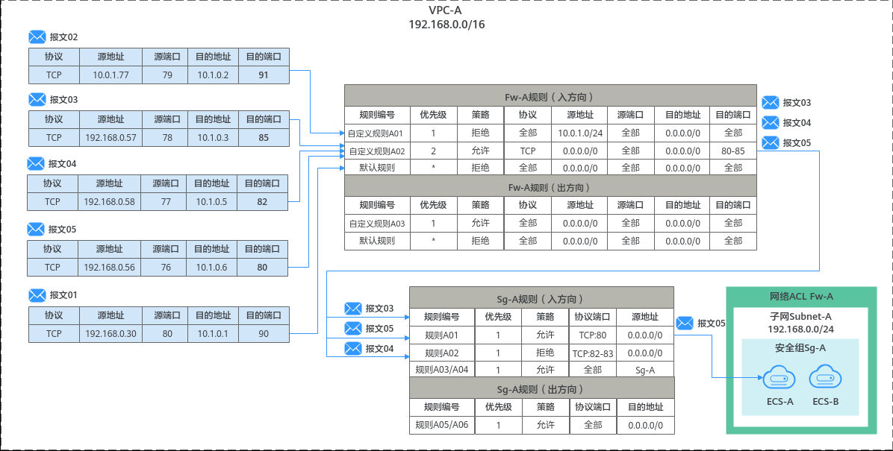

VPC访问控制概述
VPC是您在云上的私有网络，通过配置安全组和网络ACL策略，可以保障VPC内部署的实例安全运行，比如弹性云服务器、数据库、云容器等。
- 安全组对实例进行防护，将实例加入安全组内后，该实例将会受到安全组的保护。
- 网络ACL对整个子网进行防护，将子网关联至网络ACL，则子网内的所有实例都会受到网络ACL保护。相比安全组，网络ACL的防护范围更大。
安全组和网络ACL的应用示例如 图1 所示。本示例中，安全组A和安全组B可以保护其中ECS的网络安全，通过网络ACL A和网络ACL B，可以分别保护整个子网1和子网2的安全，双层防护提升安全保障。
图1 安全组与网络ACL

{kind=link}
1. 安全组与网络ACL的区别说明¶
表1为您提供了安全组和网络ACL的详细区别。
表1 安全组和网络ACL区别
| 对比项 | 安全组 | 网络ACL |
|---|---|---|
| 防护范围 | 实例级别：防护安全组内的实例，比如弹性云服务器、数据库、云容器实例等。 | 子网级别：防护整个子网，子网内的所有实例都会受到网络ACL的保护。 |
| 是否必选 | 必选，实例必须至少加入到一个安全组内。 | 非必选，您可以根据业务需求选择是否为子网关联网络ACL。 |
| 有无状态 | 有状态，允许入站请求/出站请求的响应流量出入实例，不受规则限制。 | 有状态，允许入站请求/出站请求的响应流量出入子网，不受规则限制。 |
| 规则策略 | 安全组支持设置允许和拒绝策略。 - 允许策略：对于匹配成功的流量，允许流入/流出实例。 - 拒绝策略：对于匹配成功的流量，拒绝流入/流出实例。 |
网络ACL支持设置允许和拒绝策略。 - 允许策略：对于匹配成功的流量，允许流入/流出子网。 - 拒绝策略：对于匹配成功的流量，拒绝流入/流出子网。 |
| 规则报文组 | 支持报文三元组（即协议、端口和源/目的地址）过滤。 | 支持报文五元组（即协议、源端口、目的端口、源地址和目的地址）过滤。 |
| 规则生效顺序 | 当实例上绑定多个安全组，并且安全组中存在多条规则时，生效顺序如下： 1. 首先根据实例绑定安全组的顺序生效，排在前面的安全组优先级高。 2. 然后根据安全组内规则的优先级生效，优先级的数字越小，优先级越高。 3. 当优先级相同的情况下，再按照策略匹配，拒绝策略高于允许策略。 |
一个子网只能绑定一个网络ACL，当网络ACL存在多条规则时，根据规则的优先级进行生效。优先级数字越小，网络ACL规则排序越靠前，越先生效。 |
| 应用操作 | 创建实例（比如弹性云服务器）时，必须选择一个安全组，如果当前用户名下没有安全组，则系统会自动创建默认安全组。 | 创建子网没有网络ACL选项，需要先创建网络ACL，添加出入规则，并在网络ACL内关联子网。当网络ACL状态为已开启，将会对子网生效。 |
2. 流量匹配安全组和网络ACL 规则的顺序¶
当安全组和网络ACL同时存在时，流量优先匹配网络ACL的规则，然后匹配安全组规则。如图2所示，以入方向流量为例，为您详细介绍安全组和网络ACL规则的匹配顺序。
- 流量优先匹配网络ACL规则：
- 当流量未匹配上任何自定义网络ACL规则，则流量执行默认网络ACL规则，拒绝流量流入子网。
- 当流量匹配上自定义网络ACL规则，则根据网络ACL规则策略决定流量走向。
- 当策略为拒绝时，则拒绝该流量流入子网。
- 当策略为允许时，则允许该流量流入子网。
- 当流量通过网络ACL进入子网时，流量进一步匹配安全组规则：
- 当实例关联多个安全组时，流量按照安全组的顺序进行匹配。首先匹配第一个安全组内的规则。
- 当流量未匹配上任何安全组规则时，则拒绝该流量进入实例。
- 当流量匹配上安全组规则，则根据安全组规则策略决定流量走向。
- 当策略为拒绝时，则拒绝该流量流入实例。
- 当策略为允许时，则允许该流量流入实例。
- 对于未成功匹配第一个安全组内规则的流量，继续匹配第二个安全组内的规则。
- 当遍历了所有安全组的入方向规则，流量均没有匹配上时，则拒绝该流量流入实例。
- 当实例关联多个安全组时，流量按照安全组的顺序进行匹配。首先匹配第一个安全组内的规则。
图2 网络ACL和安全组的匹配顺序

{kind=link}
如图3所示，以下为您提供具体的流量匹配示例。VPC-A内有子网Subnet-A，Subnet-A内有两台弹性云服务器ECS-A和ECS-B。安全防护策略如下：
- 子网Subnet-A上关联了网络ACL Fw-A。Fw-A中的默认规则不能删除，流量优先匹配已添加的自定义规则，网络ACL规则示例请参见 表2。
- 弹性云服务器ECS-A和ECS-B由安全组Sg-A来防护。创建安全组Sg-A时，您可以选择已有模板，模板中会自带部分安全组规则。您可以对系统自带的规则进行修改或者删除，也可以添加自定义规则，安全组规则示例请参见 表3 。
图3 网络ACL和安全组的匹配顺序示例

{kind=link}
表2 网络ACL Fw-A规则说明
| 方向 | 优先级 | 类型 | 策略 | 协议 | 源地址 | 源端口范围 | 目的地址 | 目的端口范围 | 说明 |
|---|---|---|---|---|---|---|---|---|---|
| 入方向 | 1 | IPv4 | 拒绝 | 全部 | 10.0.1.0/24 | 全部 | 0.0.0.0/0 | 全部 | 自定义网络ACL规则A01：拒绝来自特定IP地址10.0.1.0/24网段的流量流入子网内 |
| 入方向 | 2 | IPv4 | 允许 | TCP | 0.0.0.0/0 | 全部 | 0.0.0.0/0 | 80-85 | 自定义网络ACL规则A02：允许所有流量访问子网内实例的80-85端口 |
| 入方向 | * | -- | 拒绝 | 全部 | 0.0.0.0/0 | 全部 | 0.0.0.0/0 | 全部 | 默认网络ACL规则：拒绝所有流量流入子网 |
| 出方向 | 1 | IPv4 | 允许 | 全部 | 0.0.0.0/0 | 全部 | 0.0.0.0/0 | 全部 | 自定义网络ACL规则A03：允许所有流量从子网流出 |
| 出方向 | * | -- | 拒绝 | 全部 | 0.0.0.0/0 | 全部 | 0.0.0.0/0 | 全部 | 默认网络ACL规则：拒绝所有流量从子网流出 |
表3 安全组Sg-A规则说明
| 方向 | 优先级 | 策略 | 类型 | 协议端口 | 源地址/目的地址 | 描述 |
|---|---|---|---|---|---|---|
| 入方向 | 1 | 允许 | IPv4 | 自定义TCP：80 | 源地址：0.0.0.0/0 | 安全组规则A01：针对全部IPv4协议，允许所有流量访问安全组内实例的80端口 |
| 入方向 | 1 | 拒绝 | IPv4 | 自定义TCP：82-83 | 源地址：0.0.0.0/0 | 安全组规则A02：针对全部IPv4协议，拒绝所有流量访问安全组内实例的82和83端口 |
| 入方向 | 1 | 允许 | IPv4 | 全部 | 源地址：当前安全组（Sg-A） | 安全组规则A03：针对全部IPv4协议，确保安全组内实例网络互通 |
| 入方向 | 1 | 允许 | IPv6 | 全部 | 源地址：当前安全组（Sg-A） | 安全组规则A04：针对全部IPv6协议，确保安全组内实例网络互通 |
| 出方向 | 1 | 允许 | IPv4 | 全部 | 目的地址：0.0.0.0/0 | 安全组规则A05：针对全部IPv4协议，允许所有流量从安全组内实例流出 |
| 出方向 | 1 | 允许 | IPv6 | 全部 | 目的地址：::/0 | 安全组规则A06：针对全部IPv6协议，允许所有流量从安全组内实例流出 |
基于以上场景，不同入方向报文对规则的匹配情况如下： - 报文01： 报文01无法匹配上Fw-A中的自定义网络ACL规则，则匹配默认规则，拒绝该报文流入子网。 - 报文02： 报文02可匹配上Fw-A中的自定义网络ACL规则A01，根据规则策略，拒绝该报文流入子网。 - 报文03： 报文03可匹配上Fw-A中的自定义网络ACL规则A02，根据规则策略，允许该报文流入子网。该报文继续匹配安全组规则，无法匹配上Sg-A的任何入方向规则，拒绝该报文流入实例。 - 报文04： 报文04可匹配上Fw-A中的自定义网络ACL规则02，根据规则策略，允许该报文流入子网。该报文继续匹配安全组规则，可匹配上Sg-A的安全组规则A02，根据规则策略，拒绝该报文流入实例。 - 报文05： 报文05可匹配上Fw-A中的自定义网络ACL规则02，根据规则策略，允许该报文流入子网。该报文继续匹配安全组规则，可匹配上Sg-A的安全组规则A01，根据规则策略，允许该报文流入实例。